Электрификация
от 8 000 ₽
Установка нашего или вашего комплекта под ключ: сборка колеса, установка элементов, подключение, настройка контроллера.
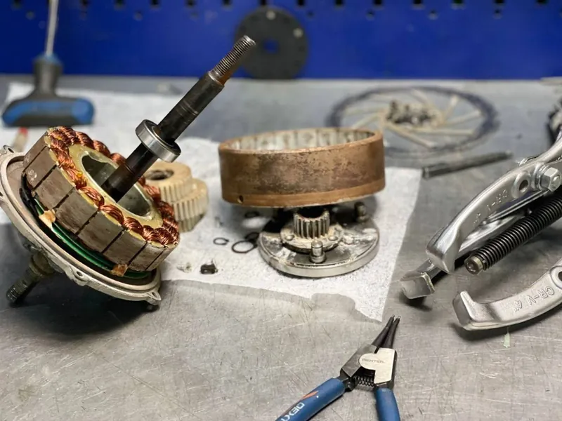
Электросервис · Новосибирск
Электровелосипеды, электромото, самокаты и моноколёса. Диагностика электроники, датчики Холла и фазные провода, контроллеры, проводка, аккумуляторы. Устранение поломки от 1 до 3 дней.
Установка нашего или вашего комплекта под ключ: сборка колеса, установка элементов, подключение, настройка контроллера.
Сезонное обслуживание: полный разбор, чистка, замена смазки, подшипники, герметизация.
Соберём под ваши параметры: подберём и найдём комплектующие, выполним конечную сборку.
Индивидуальная сборка АКБ под ваш велосипед, мото или самокат и нужные характеристики. Из наших или ваших элементов.
Предварительная цена определяется после диагностики и зависит от сложности работ.
Такой работы в прайсе нет. Позвоните мастеру, подскажем.
Из мастерской


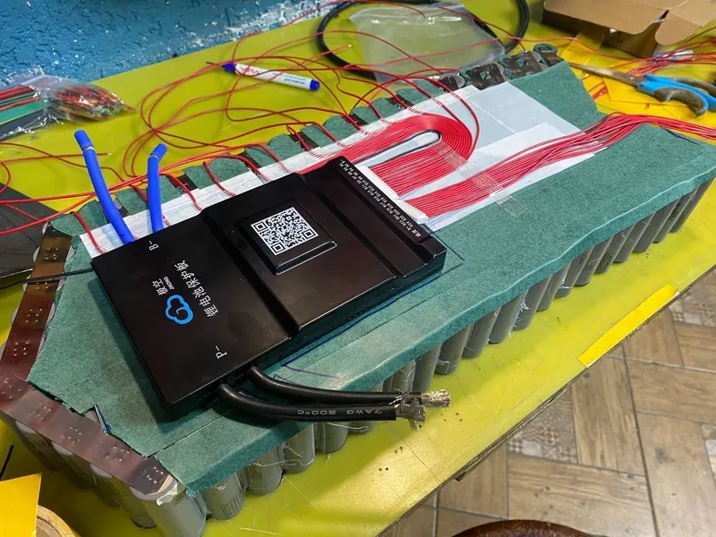
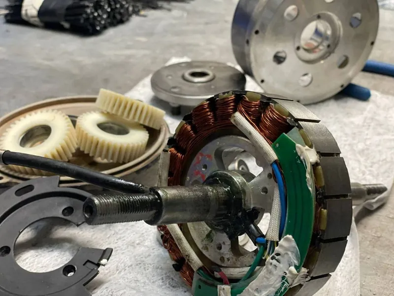
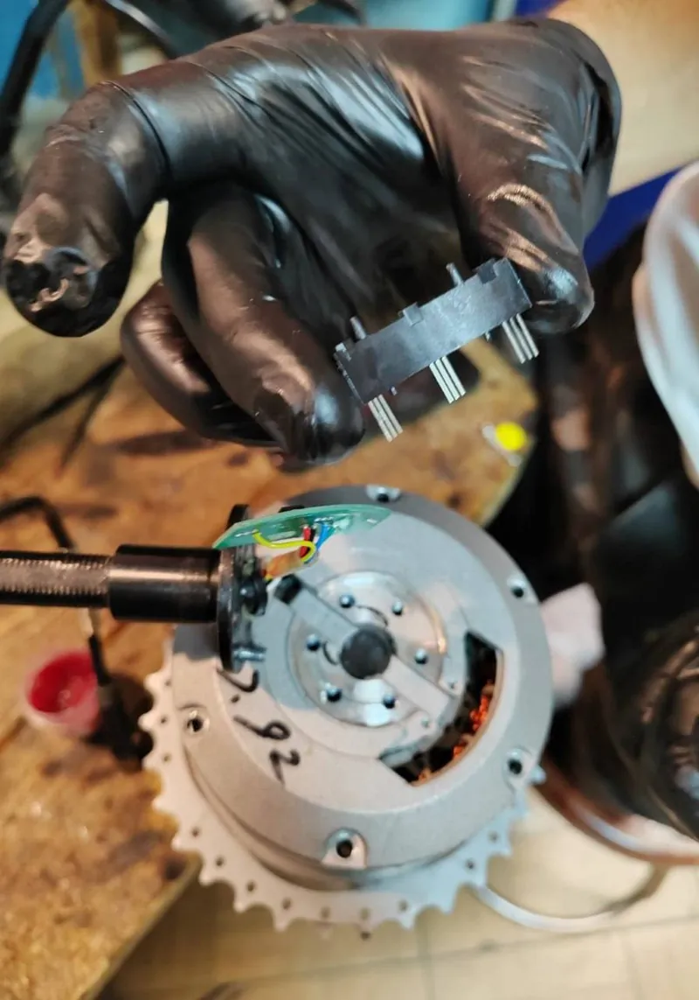
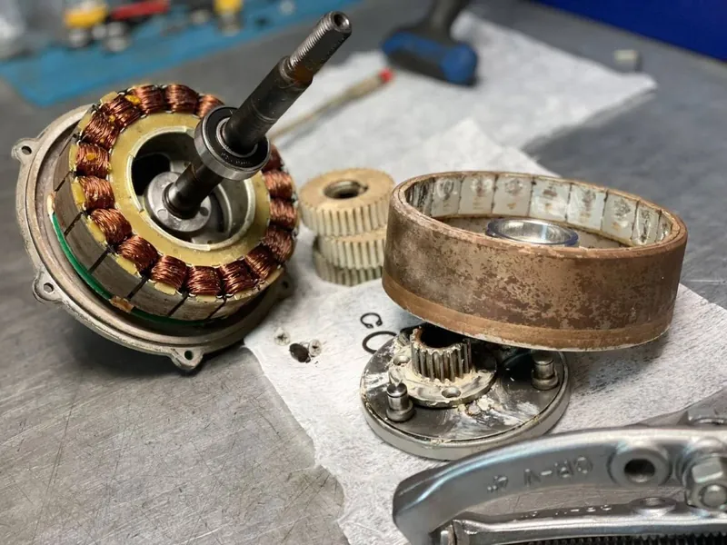
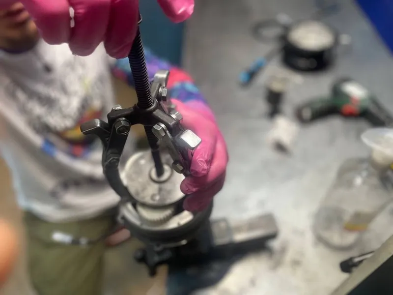
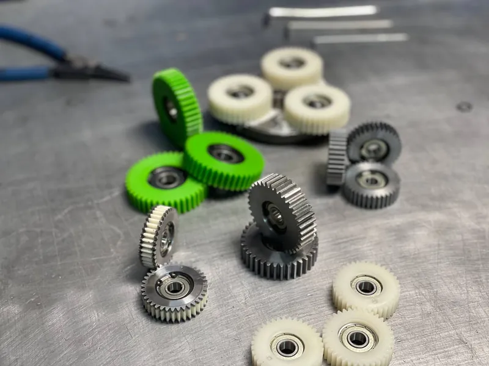
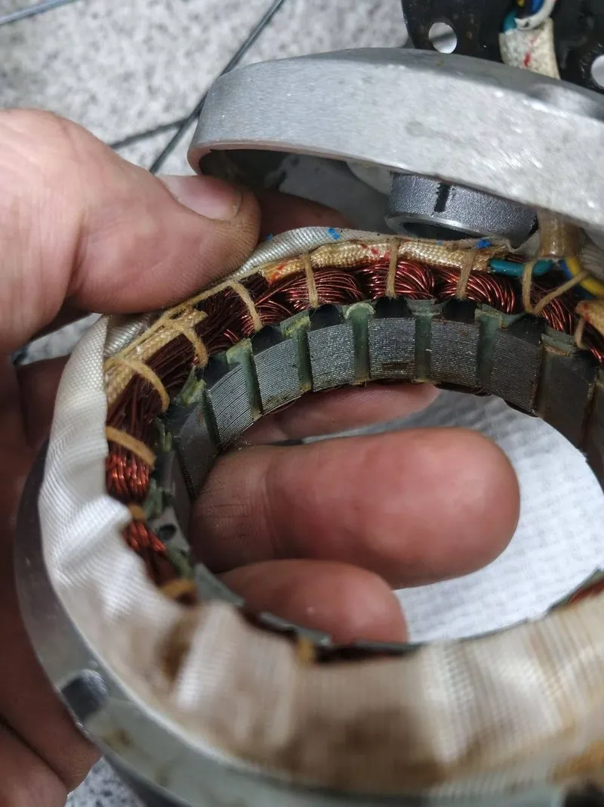
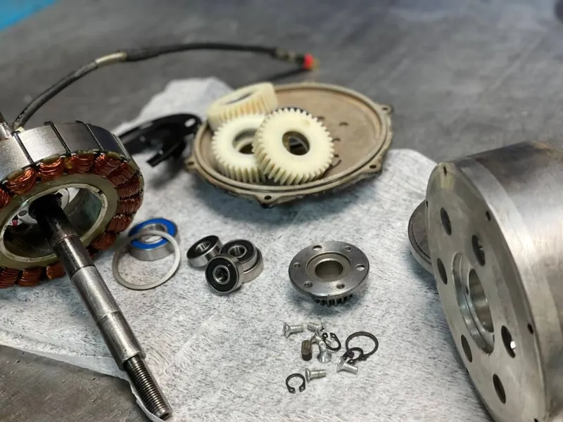
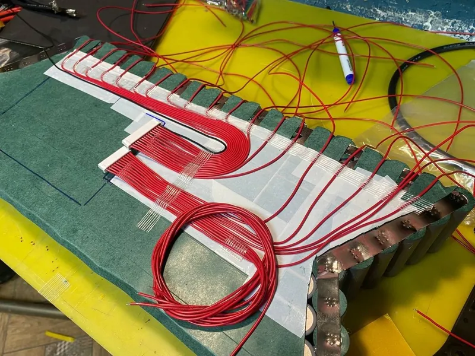
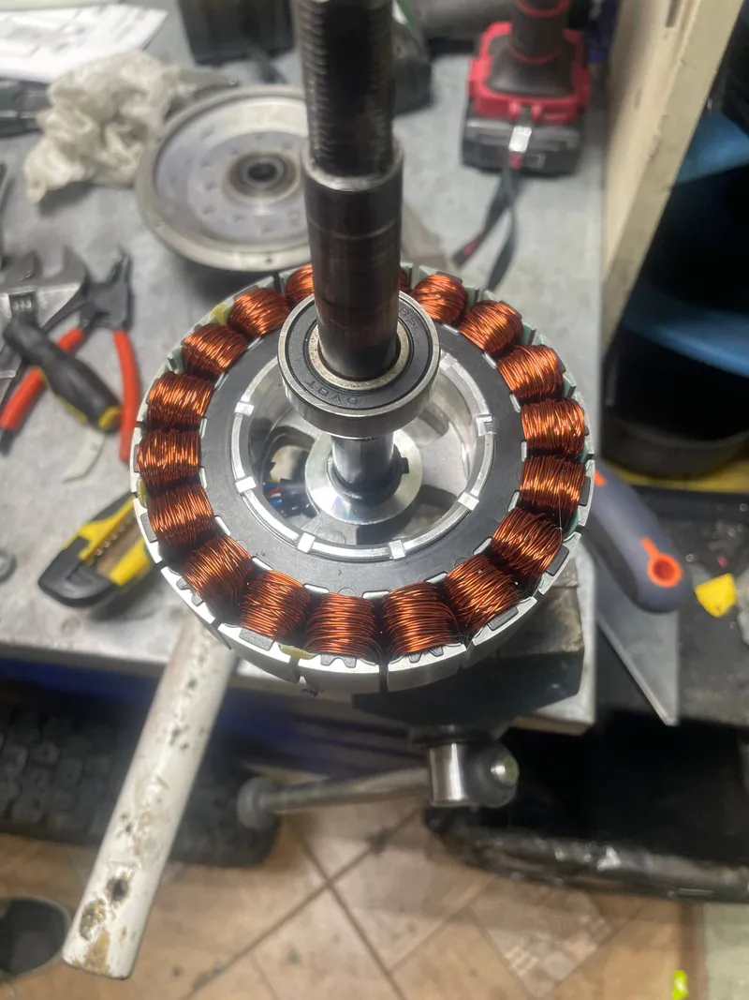
Не только велосипеды
Обслуживаем и ремонтируем электромотоциклы и тяжёлые электробайки: мотор, контроллер, проводка, аккумулятор.

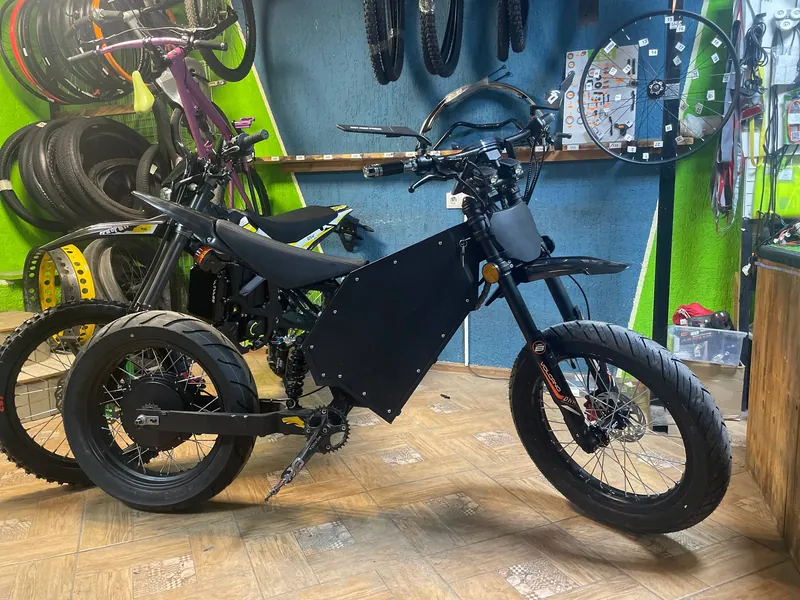
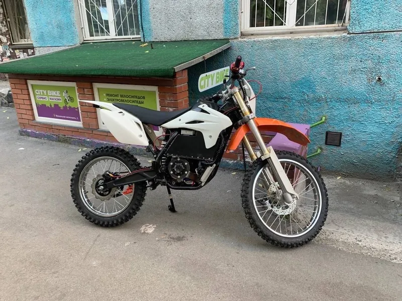
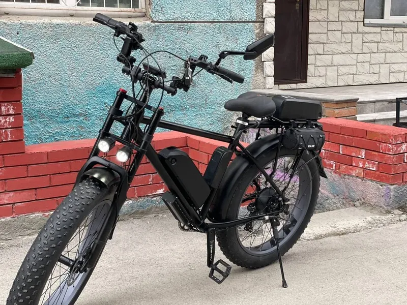
Сезонное обслуживание от 4 500 ₽: полный разбор, чистка, замена смазки, обслуживание подшипников и герметизация мотора.
Да. Капитальный ремонт ржавого, утонувшего или заклинившего мотора от 4 500 ₽. Точную цену скажем после разбора.
Да: замер ёмкости от 1 000 ₽ за 10 Ач, балансировка от 1 000 ₽, замена неисправной ячейки от 2 000 ₽, замена BMS от 2 500 ₽.
Да. Собираем Li-ion АКБ под ваш транспорт, габариты и характеристики, из наших или ваших элементов. Работа от 10 000 ₽.
Частые коды E-06 — E-10 расшифрованы в нашем онлайн-диагносте. Там же описаны типичные симптомы и как их проверить.
Новосибирск, Вокзальная магистраль, 3, цоколь, въезд со двора. Ежедневно с 11:00 до 20:00, кроме воскресенья.